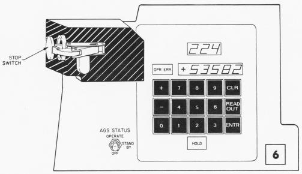
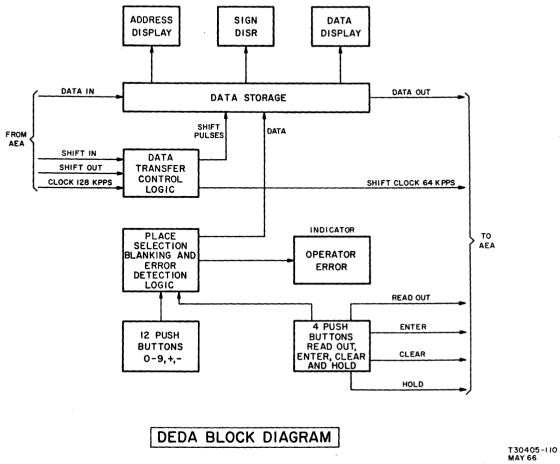

{kind=link}
{kind=link}
{kind=link}
{kind=link}
{kind=link}
This page is available under the Creative Commons No Rights Reserved License
Last modified by Ronald Burkey on 2021-09-19.

If you don't already know that the Abort Guidance System is,
perhaps you'll want to continue on to the next section
before before reading this section. But if you do already
know everything there is to know about the AGS, and simply want to
know what we are providing, I'll tell you that we provide
a simulation of the AGS computer (the AEA), a simulation of the
display/keyboard unit for it (the DEDA), and the original
Apollo-era software which can be run on the AEA ... or at least, a
couple of versions of the software. As with the Apollo
Guidance Computer (AGC) proper, you can either run this simulated
AGS in a standalone way, or you can take advantage of the
fact our AGS simulation has been built into the Orbiter spacecraft
simulator via the
NASSP
project, and in so doing you can fly simulated aborts of
lunar landings or ascents in a much-more realistic way.
Ryan Callaway has made a couple of videos of hypothetical Apollo
12 aborts using the simulated AGS incorporated into NASSP, and
posted them on YouTube. Unfortunately, we only have a couple
of different versions of the original AGS software, known as
"Flight Program 6" (FP6) and "Flight Program 8", and aren't
entirely sure what versions were used for which missions.
However, we believe that something very close to FP6 was used for
Apollo 12, and that's what Ryan uses as well.
The first video illustrates an abort during the lunar descent,
close to the surface; the abort process detaches LM ascent stage
from the LM descent stage, and puts it into lunar orbit in which
the Command Module can later rendezvous with it and dock. Of
course, the computer system is just a black box hidden away
somewhere in the Lunar Module, and isn't visible in these videos,
and the visible representative of the AGS is the display and
keyboard, the DEDA. The DEDA, which is at the lower
right-hand corner of the instrument panel, doesn't appear until
about a minute into the video. The Apollo Guidance
Computer's display/keyboard (the "DSKY") also appears, in the
bottom center of the instrument panel. You'll see that the
abort is a relatively hands-off affair once it gets started, and
it's largely a matter of the DEDA and DSKY both displaying the
"velocity to be gained", with the AGS turning off the engines when
that gets close enough to zero!
| Program Name |
Acronym |
Description |
Notes |
Program Listing |
| Design Mission Computer
Program |
DMCP |
Baseline |
All of the other flight programs listed below
(FP2 through FP8) are modifications of this baseline
software. |
|
| Flight Program 2 |
FP2 |
December 1967, probably
Apollo 5 |
Apollo 5 was an unmanned LM Earth-orbit test mission. | |
| Flight Program 3 |
FP3 |
May 1968, Apollo 9 |
The Apollo
9 Mission Report (page 9-29) says: "The abort
electronics assembly flight program 3, the inflight
calibration routines, and all input/output interfaces
performed properly throughout the mission." |
|
| Flight Program 4 |
FP4 |
(Identical to FP 3) |
||
| Flight Program 5 |
FP5 |
Apollo 10 |
The Apollo
10 Flight Plan (page 1-22) says: "The LM AGS will use
Flight Program 5 (Mission G will use Flight Program "X")." |
|
| Flight Program 6 |
FP6 |
February 14, 1969, Apollo 11 and Apollo 12 | Regarding Apollo 11: The LM
AGS Computer Program Specification, Flight Program 6 (page
8) and the LM
AGS Guidance Software Final Design Report, Flight Program
6 (page 2) specify that FP6 was designed for "G" type
missions. Similarly, the Program
Verification Test Results, LM/AGS Flight Program No. 6
(page 4) says that "the testing was required to verify
the program for the manned lunar landing (G) Mission."
Apollo 11 was the only G mission. The LM/AGS
Flight Program 6 LM 5 Mission Constants is even more
explicit in its very title, given that LM-5 was the Lunar
Module used in Apollo 11. Regarding Apollo 12: This is less obvious than the Apollo 11 case, since Apollo 12 was an "H" type mission rather than a "G" type mission. A couple of significant FP7 documents weren't released until after the Apollo 12 mission, so we can conclude that Apollo 12 continued to use FP6. (The documents mentioned are the FP7 "Programmed Guidance Equations" and "Sim Flight Operating Procedures. While we don't have the full texts of these documents as of this writing, the former is referenced here, dated December 1969, and the latter's title page can be seen here, dated January 1970.) Also, see the following entry (Apollo 13). |
FP6.aea.html |
| Flight Program 7 |
FP7 |
Apollo 13 and Apollo 14 |
The G&N Dictionaries for the Apollo
12 (page 83) and Apollo
13 (page 101) missions allow us to conclude that
Apollo 12 and 13 used different versions of the AGS Flight
Program. The AGS portions of these "dictionaries"
relevant to our discussion are basically lists of AGS memory
locations, including descriptions and the allowed values
they can contain. Since the dictionaries for Apollo 12
and 13 differ slightly, the AGS software versions must
differ as well. An example is addresses 225/226. Since
Apollo 12 (see preceding entry in this table) used FP6, then
we'd conclude that Apollo 13 used a later version of the
Flight Program. Just as we can conclude that Apollo 12 and 13 used different versions of the software, we can conclude that Apollo 13 and 14 used the same version. We can do this by comparing the Apollo 13 G&N Dictionary described above with the "LM PGNS/AGS Training Card", because the training card also contains a list of AGS memory addresses, and that list agrees with the Apollo 13 dictionary. But beyond that, the training card specifically states that it covers:
The conclusion that both Apollo 13 and 14 used FP7 is
inescapable. By the way, it's tempting to say that it doesn't really
matter for Apollo 13 which flight program version was
used, since because of the service-module explosion there
was no lunar landing. But in fact, the
AGS was in fact used in Apollo 13 for a manual
course correction. My reading of the linked
flight log is that the AGS/DEDA was only used in the
course correction to monitor velocity (AGS address
470). But this was identical in FP6 and FP8, and
therefore presumably in FP7. In other words, even
though we presently have no copy of FP7, either FP6 or FP8
might suffice in a simulation of an Apollo 13 mission. |
While we have no program
listing of FP7, it may be worth considering that the AGS
section of the Apollo
13 G&N Data Dictionary, when combined with the
FP7-to-FP8 change notes in the FP8
operating manual, might provide some basis for
reconstructing FP7 source code from FP6 & FP8 source
code. Maybe. |
| Flight Program 8 |
FP8 |
Released April 28, 1971 (copy
is dated December 18, 1970), Apollo 15-17. |
Apollo 15: That FP8 was used for Apollo
15 can be concluded from the document titled "Verification of LM AGS
Rendezvous Navigation Using Automatic Data for Apollo 15".
Apollo 17: As is pointed out later, the release date is mentioned in the documentation for the Apollo 17 Flight Readiness Review (of which unfortunately we do not have a copy), which is how we can conclude FP8 was used for Apollo 17 as well. Apollo 16: I don't know of any direct support for the conclusion that Apollo 16 used FP8, but the fact that both Apollo 15 and 17 did so seems pretty suggestive. |
FP8.aea.html |
|
-- James Tomayko, Computers in Space Flight |
|
Register |
Description |
| A |
The "accumulator", involved
implicitly in most instructions as the source or
destination for data. |
| Q |
The "multiplier quotient"
register. A kind of less-significant-word register
for extending the length of the accumulator, but also used
in a dedicated way for a number of different kinds of
operations like multiplication and division. |
| Index |
A three-bit register which
can optionally be added to addresses to create an indexed
addressing mode by setting the index flag in the
instruction word. Also used as a loop counter.
Obviously, since the register can only take values 0-7,
the array and loop sizes used were very small. |
|  |  |
| Important Note! The description that follows
covers the "classic" debugging mode for versions prior to
20090427. I retain this description as-is for the
benefit of those using one of those versions of yaAGS. However,
for versions 20090427 and later, command-line debugging is
in the process of changing to a style more closely related
to that of the widely used gdb program, and the "classic" mode
described below will gradually disappear. Since
these changes have been driven by Onno Hommes, we have
agreed that Onno will maintain documentation for the new
debugging mode at his website.
|